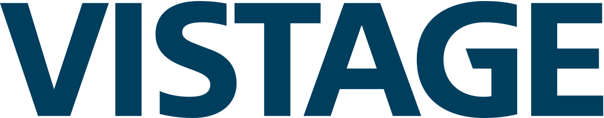
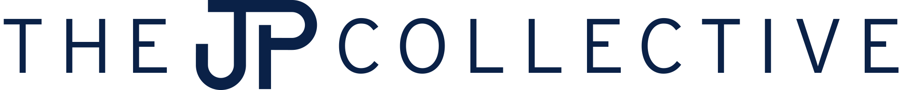

Logo Prism Animatic
Vistage · BSGI · The JP Collective — a 6-second intro on St. Lucia's "Elevate".
The preview above is 1080p. The zip contains the 4K master (3840×2160).
What's in the zip
- video/: the 4K master (3840×2160), a 1080p version, and a 4K still of the last frame. Both videos are rendered natively at their own size; neither is an upscale of the other.
- logos/: each company's logo exactly as downloaded from its website, plus the three versions used in the video.
- music/: the first 6 seconds of "Elevate" with the fade, exactly as used. For anything public, use a licensed copy of the song.
- project/: the editable source (HTML + GSAP, rendered with HyperFrames), and a README with timings and file sources.
The BSGI logo's only public source is a 600px PNG, so it's a little soft at 4K. A high-res or vector BSGI logo would fix that with a quick re-render.
Timing
| Time | Beat | What happens |
|---|---|---|
| 0.19s | Bar 1, downbeat | Vistage appears |
| 2.51s | Bar 2, downbeat | Prism turns end over end to BSGI |
| 4.83s | Bar 3, downbeat | Prism turns to The JP Collective |
| 4.9–6.0s | — | Hold, music fades out |
103.4 BPM, so one bar is 2.32s.
Other directions we explored
A · Prism turn, with face outline
The first take of the chosen direction, with a visible box on each face of the prism.
B · Night slam
Dark navy background with white logos. Each one hard-cuts in on the downbeat with a scale punch, a light streak, and a glow.
C · Brand-color wipe
A bar in each brand's color sweeps across and pulls away to reveal the logo. The logos build into a vertical stack.
D · Push through
Each logo rushes in from deep space, lands on the downbeat, then flies past the camera as the next one arrives.
E · Lineup build
Logos slam in one per bar and slide over to build a three-across lineup.
Logos

